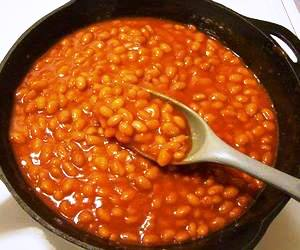

Beans Stew

Description
A hot beans stew than can be made and stocked for several days the meal requires much work to make but is a perfect meal in a cold winter night
- 6 cups of water
- 2¼ cups of dried beans
- 1½ cups of tomato juice
- 1 cup chopped onion
- ¼ cup brown sugar
- 2 cloves of garlic mashed
- 1 teaspoon salt
- 1 teaspoon chili powder
- ¼ teaspoon coarse black pepper
- Stew seasoning
- Put beans in a cold water and let it stay overnight
- boil the beans with the water for about 2 hours
- in a separate pot place oil and cook the onions until light brown
- add tomato juice and water to the onions then place the salt garlic, pepper, brown sugar, chili and stew seasoning, then mix until the stew becomes thick
- once the water in the beans becomes low pour the stew into the beans and mix let it on fire until the beans become tender
- Serve in bowels and enjoy the beans